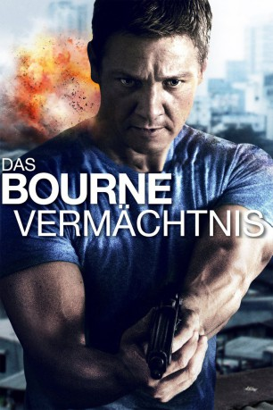

gesehen am 25.07.2015
gesehen am 25.07.2015Alternativ: The Bourne Legacy gesehen am 25.07.2015
 
 IMDB-Wertung: 6.7 / 10
IMDB-Wertung: 6.7 / 10  Metascore:
Metascore: 
Jason Bourne war nicht alleine: Tatsächlich war er nur einer von vielen Agenten, die beim Treadstone-Programm zu einer willenlosen Tötungsmaschine umprogrammiert wurden. Zu ihnen gehörte auch Aaron Cross, ein Agent, der als verschwunden galt - bis er, wie Bourne, unvermittelt mit gelöschtem Gedächtnis wieder auftaucht und beginnt, Fragen zu stellen. Das sorgt für Panik bei den Verantwortlichen innerhalb des CIA, denn Aaron Cross ist bekannt dafür, noch viel gefährlicher zu sein als Jason Bourne.
Jahr: 2012
Dauer: 135 Minuten
FSK: 12
Land: USA Studio: Universal PicturesTonspuren: DTS - ,
Untertitel: Deutsch,
Auflösung: 1080p (1920×800) Größe: 14643 MB
Genre: Action, Abenteuer, Thriller
Regisseur: Tony Gilroy
Drehbuch: Tony Gilroy, Dan Gilroy, Tony Gilroy, Robert Ludlum
Soundtrack: James Newton Howard
Darsteller:
 Jeremy Renner als Aaron Cross
Jeremy Renner als Aaron Cross Scott Glenn als Ezra Kramer
Scott Glenn als Ezra Kramer Stacy Keach als Adm Mark Turso USN Ret.
Stacy Keach als Adm Mark Turso USN Ret. Edward Norton als Col Eric Byer, USAF, Ret.
Edward Norton als Col Eric Byer, USAF, Ret. Donna Murphy als Dita Mandy
Donna Murphy als Dita Mandy Michael Chernus als Arthur Ingram
Michael Chernus als Arthur Ingram Corey Stoll als Zev Vendel
Corey Stoll als Zev Vendel Rachel Weisz als Dr. Marta Shearing
Rachel Weisz als Dr. Marta Shearing Zeljko Ivanek als Dr. Donald Foite
Zeljko Ivanek als Dr. Donald Foite Albert Finney als Dr. Albert Hirsch
Albert Finney als Dr. Albert Hirsch Dennis Boutsikaris als Terrence Ward
Dennis Boutsikaris als Terrence Ward Oscar Isaac als Outcome #3
Oscar Isaac als Outcome #3 David Strathairn als Noah Vosen
David Strathairn als Noah Vosen Corey Johnson als Ray Wills
Corey Johnson als Ray Wills Jennifer Kim als Outcome #4
Jennifer Kim als Outcome #4 Tom Riis Farrell als Blue Lab Doctor
Tom Riis Farrell als Blue Lab Doctor Steve Routman als Blue Lab Doctor
Steve Routman als Blue Lab Doctor Peter Gray Lewis als Blue Lab Doctor
Peter Gray Lewis als Blue Lab Doctor Christopher Mann als Lab Guard
Christopher Mann als Lab Guard Billy Smith als Lab Guard
Billy Smith als Lab Guard Elizabeth Marvel als Dr. Connie Dowd
Elizabeth Marvel als Dr. Connie Dowd Michael Papajohn als Larry
Michael Papajohn als Larry David Leitch als The Driver
David Leitch als The Driver Michael Berresse als Leonard
Michael Berresse als Leonard Deidre Goodwin als Candent Spokesperson
Deidre Goodwin als Candent Spokesperson Sharon Washington als C-Team
Sharon Washington als C-Team Frank Deal als C-Team
Frank Deal als C-Team Rob Yang als C-Team
Rob Yang als C-Team Catherine Curtin als C-Team
Catherine Curtin als C-Team Faye Yvette McQueen als TSA Guard
Faye Yvette McQueen als TSA Guard Shane Jacobson als Mackie
Shane Jacobson als Mackie Jon Valera als Guard
Jon Valera als Guard Louis Ozawa Changchien als LARX #3
Louis Ozawa Changchien als LARX #3Datei: X:\5-Pentalogie(A-Z)\Bourne\Bourne 4 - Vermächtnis, Das (2012, FSK12, 1920x800).mkv seit 02.02.2015
Festplatte: HD Collection-3(N-Z)-6(A-Z)
 Es gibt insgesamt 8 Filme in der Gruppe '5-Pentalogie(A-Z)\Bourne'
Es gibt insgesamt 8 Filme in der Gruppe '5-Pentalogie(A-Z)\Bourne'